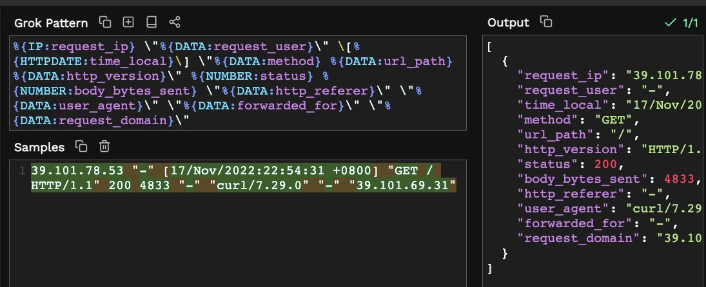

用Rsyslog和Logstash采集分析Nginx日志
介绍
nginx作为大多数公司提供互联网服务的请求流量入口，Nginx日志是Web服务器中重要的组成部分之一，记录了所有的HTTP请求和响应，以及与这些请求和响应相关的信息。通过对Nginx日志进行分析，可以获得以下用途：
-
监控和性能分析：通过分析Nginx日志，可以了解Web服务器的性能指标，如请求次数、请求响应时间、客户端IP地址、错误率等，从而可以监控服务器的状态和性能。
-
安全分析：通过分析Nginx日志，可以识别潜在的安全风险和攻击行为，例如通过分析IP地址和请求类型，可以识别出针对服务器的恶意访问和DDoS攻击等。
-
行为分析：通过分析Nginx日志，可以了解Web应用的用户行为、趋势和偏好，例如访问页面、搜索关键词、浏览时间等，这些信息可以用于优化Web应用的体验和改善用户满意度。
-
SEO优化：通过分析Nginx日志，可以了解来自搜索引擎的访问情况和搜索关键词，这些信息可以用于优化网站的搜索引擎排名和流量。
-
业务分析：通过分析Nginx日志，可以了解Web应用的业务指标，例如注册用户数、订单量、销售额等，这些信息可以用于优化业务流程和提升业务效率。
综上所述，Nginx日志是Web服务器中非常重要的组成部分，通过对其进行分析，可以获得丰富的信息，帮助我们了解Web应用的状态和性能、识别潜在的安全风险和攻击行为、优化Web应用的体验和改善用户满意度、优化网站的搜索引擎排名和流量、优化业务流程和提升业务效率。
本文介绍nginx日志采集和Logstash预处理
整体采集架构如图

在nginx机器上通过linux自带的rsyslog软件，将nginx访问日志access.log采集到logstash，logstash进行一些日志抽取、转换等动作，然后写入到ElastichSearch
服务搭建过程记录
本文重点记录nginx服务器的rsyslog配置和logstash配置，kibana和Elasticsearch搭建可以参考网上现有资料
logstash搭建
Logstash是一款开源的日志处理工具，由Elastic公司开发，旨在通过收集、过滤、转换和输出各种日志数据，帮助用户更好地理解其数据。
Logstash的主要功能如下：
-
数据收集：Logstash可以从多个源收集数据，包括日志文件、消息队列、数据库、网络等。它支持多种输入协议，如Beats、Syslog、TCP、UDP、HTTP等。
-
数据过滤：Logstash可以使用各种过滤器对数据进行处理，包括Grok、JSON、Date、GeoIP、Mutate等。这些过滤器可以解析结构化数据、删除无用信息、更改字段、增加新字段等操作。
-
数据转换：Logstash可以将原始数据转换为目标格式，例如将JSON数据转换为CSV、XML等格式。
-
数据输出：Logstash可以将数据输出到多种目标，如Elasticsearch、Redis、Kafka等。它还支持多种输出协议，如HTTP、TCP、UDP、Syslog等。
从logstash下载页 下载对应安装包，我选择的是Linux的tar.gz包
tar zxvf logstash-8.5.0-linux-x86_64.tar.gz
cd logstash-8.5.0
配置logstash 配置logstash流水线任务：读取rsyslog日志，解析字段，写入ES的,解析
Logstash的配置抽象为 输出(input),过滤(filter)，输出(output)三部分，每一部份都支持大量的插件，通过插件机制灵活组合，支持非常强大的输入 过滤 输出组合，我们常见的大部分功能场景都有对应插件
我们本次使用的grok插件文档地址，mutate插件文档地址，大家可以可以根据文档说明，对插件进行深入的配置使用
文件配置位置 logstash-8.5.0/conf/nginx-rsyslog.conf
内容如下：
input {
syslog{
port => 1514 #rsyslog协议默认是514端口，这里改用1514端口
}
}
filter{
grok{
match => {
# message的grok正则表达如下,写道message里 双引号“",加反斜杠转义
# %{IP:request_ip} "%{DATA:request_user}" \[%{HTTPDATE:time_local}\] "%{DATA:method} %{DATA:url_path} %{DATA:http_version}" %{NUMBER:status} %{NUMBER:body_bytes_sent} "%{DATA:http_referer}" "%{DATA:user_agent}" "%{DATA:forwarded_for}" "%{DATA:request_domain}"
"message" => "%{IP:request_ip} \"%{DATA:request_user}\" \[%{HTTPDATE:time_local}\] \"%{DATA:method} %{DATA:url_path} %{DATA:http_version}\" %{NUMBER:status} %{NUMBER:body_bytes_sent} \"%{DATA:http_referer}\" \"%{DATA:user_agent}\" \"%{DATA:forwarded_for}\" \"%{DATA:request_domain}\""
}
}
mutate {
# rsyslog协议有非常多的协议元数据字段，我们日志分析都用不到，统一删除字段
remove_field => ["log","service","event","program","facility","facility_label","priority","severity","severity_label","logsource","@version","process"]
}
}
output {
elasticsearch {
hosts => ["https://localhost:9200"]
index => "nginx-access-log-%{+YYYY.MM.dd}"
user => "elastic"
password => "WRQc*9nlwt8pgMUcosks"
ssl => "true"
cacert => "/home/elastic/elasticsearch-8.5.0/config/certs/http_ca.crt"
}
# stdout调试期间开启，方便定位问题，上线后注释关闭
# stdout{
# }
}
运行logstash观察 把output.stdout章节取消注释，elasticsearch章节先注释， 观察logstash输出效果，查看nginx输出字段是否符合我们预期。 我们用logger命令发送日志内容跟filter.grok.match配置的日志格式需要一致
# -r参数 让logstash自动加载配置
./bin/logstash -f conf/nginx-rsyslog.conf -r
用logger命令构造一条日志 ,发送到logstash,观察下
#用logger发送的原始日志消息文本如下
39.101.78.53 "-" [17/Nov/2022:22:54:31 +0800] "GET / HTTP/1.1" 200 4833 "-" "curl/7.29.0" "-" "39.101.69.31"
# logger发送时，需要对原始日志消息的双引号“",加反斜杠转义
logger -T -n 127.0.0.1 -P 1514 "39.101.78.53 \"-\" [17/Nov/2022:22:54:31 +0800] \"GET / HTTP/1.1\" 200 4833 \"-\" \"curl/7.29.0\" \"-\" \"39.101.69.31\""
这里推荐一个在线的grok在线调试工具 https://grokdebugger.com/
这是我的的调试效果 
配置nginx，将access.log写到logstash
logstash配置没问题之后，我们需要在nginx服务上设置rsyslog，将nginx的access.log采集到logstash
nginx日志不仅支持打印日志输出文件，还支持输出到rsyslog协议,因此有两种方案可选
- 用nginx rsyslog协议输出日志
- 用linux自带的rsyslog，转发access.log到logstash
方式一 用nginx rsyslog协议输出日志 修改nginx.conf,设置输出日志两个输出目的地，一个是syslog，保留access.log输出
http {
# 在http这一节里面 设置nginx打印日志
log_format main '$remote_addr "$remote_user" [$time_local] "$request" '
'$status $body_bytes_sent "$http_referer" '
'"$http_user_agent" "$http_x_forwarded_for" "$host"';
# 将access.log日志，写到logstash rsyslog服务端口 172.28.252.48:1514
access_log syslog:server=172.28.252.48:1514,facility=local7,tag=nginx,severity=info main;
# 原先输出到文件的日志
access_log /var/log/nginx/access.log main
}
重启nginx，观察nginx是否有错误
nginx -s reload # 重新加载nginx配置文件
# 观察下nginx错误日志,确保添加日志配置 没问题
tail -f -n 100 /var/log/nginx/error.log
方式二 rsyslog服务中转日志到logstash
新增配置文件 /etc/rsyslog.d/nginx.conf，配置文件内容如下
$ModLoad imfile
$InputFileName /var/log/nginx/access.log
$InputFileTag nginx-access-log
$InputFileStateFile nginx-access-log
$InputFileSeverity info
$InputFileFacility local3
$InputRunFileMonitor
$InputFilePollInterval 3
$InputFilePersistStateInterval 6
local3.* @@172.28.252.48:1514
/etc/rsyslog.conf
重启rsyslog
systemctl restart rsyslog.service